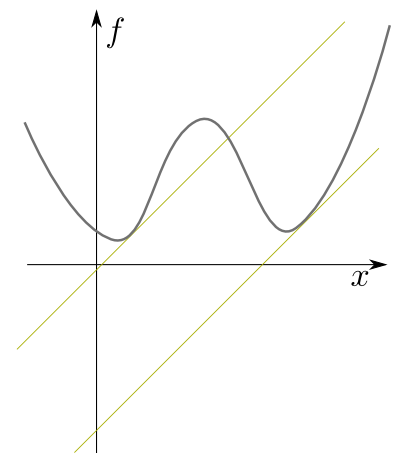

物理において、
という状況を考えることは非常に多い。解析力学では、変数$x,y,\cdots$は座標であったり速度であったり運動量であったりするが、他にもたとえば熱力学では体積$V$や温度$T$のような変数を考える。いろんな状況を考えるとき、この変数の決め方を変えたくなる。特に
という状況がよくあるのだが、この変数の変換をうっかりとやると、その関数から得られる情報が失われてしまったり、変える前と変えた後で方程式の形が（意図せぬ形に）変化してしまったりする。そうならないように関数の形を調整しつつ独立変数を変える方法を「ルジャンドル変換(Legendre transfomation)」と言う。
以下では、このルジャンドル変換について説明する。
$a$を定数として \begin{equation} f(x)=(x-a)^2\label{fxa} \hskip{200pt}(1)\end{equation} という関数を考えよう。今は$x\to f$という関数になっているわけだが、新しい変数として$f$の$x$による微分 \begin{equation} p_x={\partial f\over \partial x}=2(x-a) \end{equation} を取りたいとする。逆に、$x-a={p_x\over 2}$である。$p_x$を変数として$f$を表現すると、 \begin{equation} f={(p_x)^2\over 4}\label{fpfour} \end{equation} となる。結果は$a$によらない式になったが、ここで「簡単な式になった」と喜んではいけない。「$a$という情報を失ってしまった」と嘆くべき状況である。$x\to f$という対応関係の中には$a$の情報があるが、$p_x\to f$という対応関係の中には$a$がどこにも入っていない。つまり、「$p_x\to f$という対応関係だけを知っている人」は「$x\to f$という対応関係だけを知っている人」より情報が少ない（たとえば$p_x=2(x-a)$という式を出せるのは、後者のみ）。
なぜ情報が消えてしまったかを考えよう。以下に、$x,f$のグラフと$p_x,f$のグラフを描く。
上の左側のグラフはaを変化させた時の$f=(x-a)^2$を描いたものだ。この時表示されている接線の傾きが$p_x$である。
右側のグラフは$p_x$と$f$の関係で、式で表現すれば$f={(p_x)^2\over 4}$である。その対応関係は、$a$をずらしても（グラフを平行移動しても変わりがない（スライダーでaの値を変えることができるので、変えてみても右のグラフが変わらないことを実感せよ）。
たとえば、
という関係（グラフの下のボタンを押すとグラフ上に表示できる）は、$a$をどう変えても同じである。ゆえに「$x\to f$という関数関係」は「$p_x\to f$という関数関係」に移行させることができない。必ず情報が失われる。そこで$f$ではない新しい関数$\tilde f$を作って、情報が正しく移行されるようにしなくてはいけない。
ではどんな$\tilde f$を持ってくれば「$x\to f$という関数関係」の持っている情報を全て「$p_x\to\tilde f$という関数関係」に移行させることができるのか？---その答えがルジャンドル変換である。
次にもう一つの「失敗例」を述べよう。
二つの変数$x,y$の関数$f(x,y)$を考えよう。 \begin{equation} p_x={\partial f(x,y)\over \partial x}\biggr|_y,~~~ p_y={\partial f(x,y)\over \partial y}\biggr|_x \end{equation} のように新しい量$p_x,p_y$を定義したとする。ここで「$x,y$を変数にするんじゃなくて、$p_x,y$を変数にして問題を解きたい」と考えたとしよう。そのために、$x=x(p_x,y)$のように元々の変数$x$を新しい変数$p_x$と$y$の関数として表すことができたとしよう。
ここで単純に \begin{equation} F(p_x,y)=f(x(p_x,y),y)\label{Fpxy} \end{equation} と置いて、この関数を使っていろんなことを考えることにしたとしよう。
上の式では$p_x,y$が独立変数だと考えた式だが、これを$x,y$が独立変数だということを強調して書くと、 \begin{equation} F(p_x(x,y),y)=f(x,y)\label{Fpxxyy} \end{equation} となる。問題は
ということである。$p_y$は「$x$を一定にして$f$を$y$で微分」することで得られる$\left(p_y={\partial f\over \partial y}\biggr|_x\right)$。この「$x$を一定にして$y$を微分」という操作を上の式の両辺に対して行うと、$F(p_x(x,y),y)$には$y$が２箇所に入っていることが反映されて、 \begin{equation} \begin{array}{rl} \underbrace{ {\partial F(p_x(x,y),y)\over \partial p_x}}_{第1引数を微分}\biggr|_y{\partial p_x(x,y)\over \partial y}\biggr|_y +\underbrace{ {\partial F(p_x(x,y),y)\over \partial y}\biggr|_{p_x} }_{第2引数のみを微分} =&{\partial f(x,y)\over \partial y}\biggr|_x \end{array} \end{equation} となる。つまり、$y$で微分する時の左辺の$F$の中にある$p_x(x,y)$の中の$y$も微分される分、左辺第2項${\partial F\over \partial y}\biggr|_{p_x}$は、右辺${\partial f\over \partial y}\biggr|_x=p_y$とは違うものになる。
二つの失敗例を述べたが、この二つは別々の問題ではない。第二の例も第一の例と同じく、同じ関数を使っていたのでは対応関係の情報が失われる（破壊される）ということを述べている。第一の例で$a$が消えたが、それを$a$を定数ではなく系を特徴づける変数の一つだったと思えば、$x$から$p_x$への変換において$a$という情報が失われたことになる。同様に、第二の問題では$y$で微分した結果どうなるか、という情報が破壊された。
この二つの問題に対する対応策を述べよう。
\begin{equation}
\tilde f (p_x)=f(x)-xp_x
\end{equation}
で新しい関数を定義する。$f=(x-a)^2$の場合の$\tilde f$の意味をグラフで表現したのが次の図である。
$p_x$はグラフの接線の傾きであり、$-xp_x$という量はすなわち、接線を$f$軸まで伸ばしていった時の$f$座標の変化である。スライダで$a,x$を変えてみて欲しい。$a$の違いが$\tilde f$の違いに反映することがわかるだろう。
前節の例について実際に計算してみると、 \begin{equation} \begin{array}{rl} \tilde f = (x-a)^2- xp_x=&{(p_x)^2\over 4}- \left({(p_x)\over 2}+a\right)p_x = -{(p_x)^2\over 4}-ap_x \end{array} \end{equation} となる。情報を失っていない変換なので「元に戻す」こともできる。 \begin{equation} x=- {\partial \tilde f\over \partial p_x}={p_x\over 2}+a \end{equation} で$x$を定義して$f=\tilde f + xp_x$というのが逆変換である。
ここで$x$の定義と符号が逆になっているように見えるが、微分の形で書くと \begin{equation} \underbrace{\tilde f(p_x)=f(x)-x{\partial f\over \partial x}~~\left(p_x={\partial f\over \partial x}\right)}_{ルジャンドル変換} ,~~~~~\underbrace{ f(x)=\tilde f(p_x) - p_x {\partial \tilde f\over \partial p_x} ~~\left(x=-{\partial \tilde f\over \partial p_x}\right)}_{逆ルジャンドル変換} \end{equation} と同じ形（$x\leftrightarrow p_x,f\leftrightarrow \tilde f$と取り替えた形）になっている。すなわち、同じ形の変換を2回やると元に戻る。例の場合は \begin{equation} f=-{(p_x)^2\over 4}-ap_x +x p_x =-(x-a)^2+(x-a)\times 2(x-a)=(x-a)^2 \end{equation} で元に戻る。まとめると、以下のとおりとなる。
関数$f(x)$、すなわち$x\to f$という対応関係の入力変数を$x$ではなく$p_x={\partial f\over \partial x}$に変えたい時は \begin{equation} \tilde f(p_x)=f(x)-xp_x\label{seiLegendre} \end{equation} と定義すると、元の対応関係が持っていた情報を失うことなく新しい対応関係$p_x\to \tilde f$を作ることができる。
前ページの図はある意味「危なくない状況」を選んで描いてあるが、目ざとい人ならば
という点が心配になるのではないかと思う。
たとえば
のような状況では、$\tilde f$が一つに決まらない。
こうならないためには、グラフは常に「凸関数」でなくてはならない。すなわち、${\mathrm d^2f\over \mathrm d x ^2}={\mathrm d p \over \mathrm d x }$が符号を変えてはいけない。そのような関数であれば、$p$を決めれば$x$が決まり、ひいては$f$も$\tilde f$も決まる。
もう一つ問題になるのは次の図のように、区分的に凸関数であっても、微分が連続ではない場合である。
その場合は変数$p_x$すなわち傾きが変化しても$f$が変化しない領域ができる。上のグラフの右側は$p_x$を横軸としているが、赤が$f$、青が$\tilde f$のグラフである。途中で$f$のグラフが平坦になっている場所があることを確認しよう。
次に、2変数の例で説明しよう。 $\tilde f(p_x,y)=f(x,y)-xp_x(x,y)$という量を定義する。これを$p_x$と$y$の関数として両辺を表現すると、 \begin{equation} \tilde f(p_x,y)=f(x(p_x,y),y)-x(p_x,y)p_x \end{equation} これを$p_x$を一定にして$y$で微分すると、 \begin{equation} {\partial \tilde f(p_x,y)\over \partial y }\biggr|_{p_x}= {\partial f\over \partial x}\biggr|_{y}{\partial x(p_x,y)\over \partial y}\biggr|_{p_x} +{\partial f\over \partial y}\biggr|_{x} -{\partial x(p_x,y)\over \partial y}\biggr|_{p_x}p_x \end{equation} となるが、第1項の${\partial f\over \partial x}\biggr|_{y}$は$p_x$そのものだから、第1項と第3項は相殺して、 \begin{equation} {\partial \tilde f(p_x,y)\over \partial y }\biggr|_{p_x}= {\partial f(x,y)\over \partial y}\biggr|_{x} \end{equation} となる。つまり、$\tilde f= f-xp_x$なる量に変更した事で「$f(x,y)$の$y$による偏微分（当然、$x$は一定）」と「$\tilde f(p_x,y)$の$y$による偏微分（こっちは$p_x$が一定）」が同じ量になる。
このようにして、「変数を変換したことで偏微分の``何を固定するか''という条件が変化するのに対応して、関数の方を変えて偏微分の答が変わらないようにする変換」を作ることができた。これも「ルジャンドル変換」の意義である。
なぜルジャンドル変換でうまく独立変数の変換ができるのかを全微分の式を書いて示しておこう。ふたたび$f(x,y)$を考える。$x$が$\mathrm d x$、$y$が$\mathrm d y$変化した時の$f$の変化量は \begin{equation} \mathrm d f ={\partial f\over \partial x}\mathrm d x + {\partial f\over \partial y}\mathrm d y \end{equation} と書ける。一方、$\tilde f=f-p_x x$の微分を考えると、 \begin{equation} \mathrm d \tilde f = \underbrace{{\partial f\over \partial x}\mathrm d x + {\partial f\over \partial y}\mathrm d y }_{\mathrm d f } -\underbrace{(\mathrm d p \!_x x + p_x\mathrm d x )}_{\mathrm d (p_x x)} \end{equation} となって、第1項と第4項がちょうど消えて、 \begin{equation} \mathrm d \tilde f = {\partial f\over \partial y}\mathrm d y - \mathrm d p \!_x x \end{equation} となる。こうして、$p_x$を一定として$\tilde f$を$y$微分した時の値と、$x$を一定として$\tilde f$を$y$微分した時の値が等しくなるように変数の変換ができた。
なお、ラグランジアンとハミルトニアンを相互に変換するときのルジャンドル変換は、以下のように、上とは符号を変えた定義になっている。
凸ではない関数を（ある意味、無理矢理）ルジャンドル変換するとどうなるのか、というのを以下のグラフで示そう。
左のグラフの関数は上に凸な部分と下に凸な部分を含んでいる。このような関数をルジャンドル変換すると、「上に凸」である部分では接線にあたる線が「蓋」になったように動かなくなり、$x$が変化しているのに$\tilde f$（ルジャンドル変換後の関数）が変化しない（このあいだ、$p={\partial f\over\partial x}$は一定値（図の場合は0）を保つ。このような状況がどういう物理現象に対応するかは、相転移のところで述べよう。
なお右の図→左の図への変換（逆ルジャンドル変換）においては、$x=-{\partial \tilde f\over\partial p_x}$が成立していることに注意。